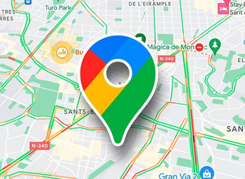

En la provincia de Pomabamba, Ancash, se celebran diversas fiestas costumbristas, destacando la Fiesta Patronal en honor a San Juan Bautista, la Fiesta de San Francisco de Asís y la Fiesta de Santísima Trinidad, también conocida como "Tayta Palla". Estas festividades incluyen danzas típicas, música, gastronomía y expresiones religiosas que reflejan la rica cultura de la zona.
Estas fiestas son una muestra de la riqueza cultural y las tradiciones arraigadas en la provincia de Pomabamba, donde la fe, la música, la danza y la gastronomía se entrelazan para celebrar la identidad local.
|
|
 |